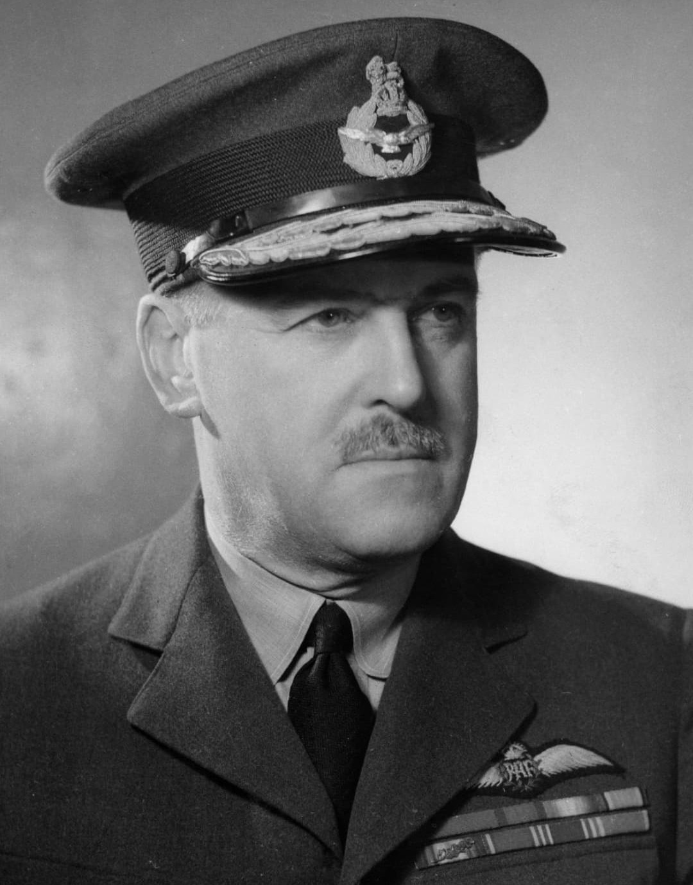

Air Chief Marshal Trafford Leigh-Mallory (1892–1944) est l’un des principaux commandants de la Royal Air Force durant la Seconde Guerre mondiale. Officier déterminé, parfois controversé, il joue un rôle majeur dans la planification et l’exécution des opérations aériennes alliées en Europe.
Il est notamment connu pour son commandement du RAF Fighter Command puis du Allied Expeditionary Air Forces lors du Débarquement de Normandie.
Nom : Trafford Leigh-Mallory
Dates : 7 juillet 1892 – 14 novembre 1944
Nationalité : Britannique
Grade : Air Chief Marshal (RAF)
Leigh-Mallory supervise l’immense dispositif aérien destiné à protéger les plages, couper les renforts allemands et assurer la supériorité aérienne alliée.
Officier de la RAF depuis la Première Guerre mondiale, Leigh-Mallory gravit les échelons grâce à son sens de l’organisation et son engagement dans le développement de la puissance aérienne britannique.
Il est parfois critiqué pour certaines décisions tactiques, notamment l’emploi massif des chasseurs lors de la bataille d’Angleterre, mais son rôle dans la préparation du Débarquement est déterminant.
Il meurt tragiquement dans un accident d’avion en novembre 1944, alors qu’il se rendait en Asie pour prendre un nouveau commandement.
Leigh-Mallory est l’un des architectes de la supériorité aérienne alliée en 1944. Son travail de coordination entre les forces aériennes britanniques, américaines et canadiennes a permis la réussite du Débarquement et l’avancée en Europe occidentale.